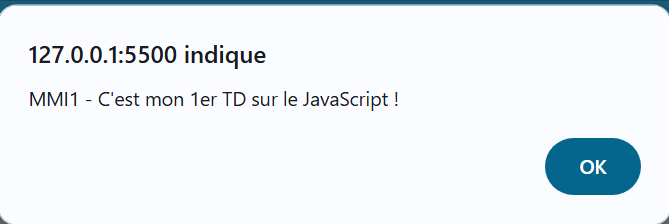

TD - Bases du JavaScript
💡 Variables, Calculs et Interaction
1. Présentation et Instructions
Le JavaScript (souvent abrégé JS) est un langage de programmation de scripts principalement utilisé dans les pages web interactives, mais aussi côté serveur. C’est un langage orienté objet à prototype.
1.1 Instructions et fonction alert()
Le code JavaScript est constitué d'une suite d'instructions (commandes ou ordres) séparées par un point-virgule à la fin de chaque instruction.
L'instruction simple 'alert()' est une fonction qui affiche une boîte de dialogue contenant un message.
<script type="text/javascript">
alert("MMI1 - C'est mon 1er TD sur le JavaScript !");
</script>

alert().
Rappel : Il est fortement recommandé d'intégrer le JavaScript dans un fichier externe (extension '.js') plutôt que directement dans le HTML.
2. Les Variables et les Types
Une variable est un espace de stockage en mémoire pour enregistrer tout type de donnée (chaîne de caractères, valeur numérique, etc.).
2.1 Déclaration et affectation
-
Pour déclarer une variable, on utilise le mot-clé
let(ou 'var' pour une ancienne syntaxe). - Le signe '=' est utilisé pour affecter une valeur à la variable (on parle d'affectation).
- Attention : Le nom d'une variable est sensible à la casse (différence majuscules/minuscules). Le nom ne peut pas commencer par un chiffre et ne peut pas être un mot-clé JS.
let maVariable; // Déclaration
maVariable = 2; // Affectation
// On peut simplifier par :
let maVariable = 2;
2.2 Types dynamiques
JavaScript est un langage typé dynamiquement. Cela signifie qu'une variable déclarée peut contenir n'importe quel type de donnée sans distinction de mot-clé.
-
Type numérique :
let number = 5; -
Type texte (String) : Peut être assigné avec des
guillemets ou des apostrophes.
let text1 = "Mon premier texte";
let text2 = 'Mon deuxième texte';
3. Les Calculs et la Concaténation
Les calculs s'effectuent de manière simple. L'opérateur '+' est utilisé pour l'addition des nombres et pour la concaténation (ajout de texte).
3.1 Simplification des calculs (Incrémentation)
Pour l'incrémentation (ajouter un nombre à la valeur de la variable), on peut utiliser la forme simplifiée :
let nombre = 3;
nombre = nombre + 5; // Forme longue, nombre vaut 8
// Équivalent à :
let nombre = 3;
nombre += 5; // Forme courte, nombre vaut 8
3.2 Concaténation (Ajout de texte)
let chaine1 = "MMI1 - ";
let chaine2 = "Béziers";
let resultat = chaine1 + chaine2; // résultat contient "MMI1 - Béziers"
4. Interaction avec l'utilisateur et Conditions
4.1 Fonction prompt() et conversion
La fonction prompt() affiche une boîte
de dialogue et renvoie ce que l'utilisateur a écrit.
ATTENTION : prompt() renvoie toujours
une chaîne de caractères (texte), même si
l'utilisateur entre un chiffre. Pour faire des calculs, il faut
convertir cette chaîne en nombre avec la fonction
parseInt().
let texte = '1337', nombre;
nombre = parseInt(texte); // nombre vaut le nombre 1337
alert(typeof nombre); // typeof indique le type de la variable